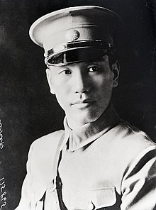
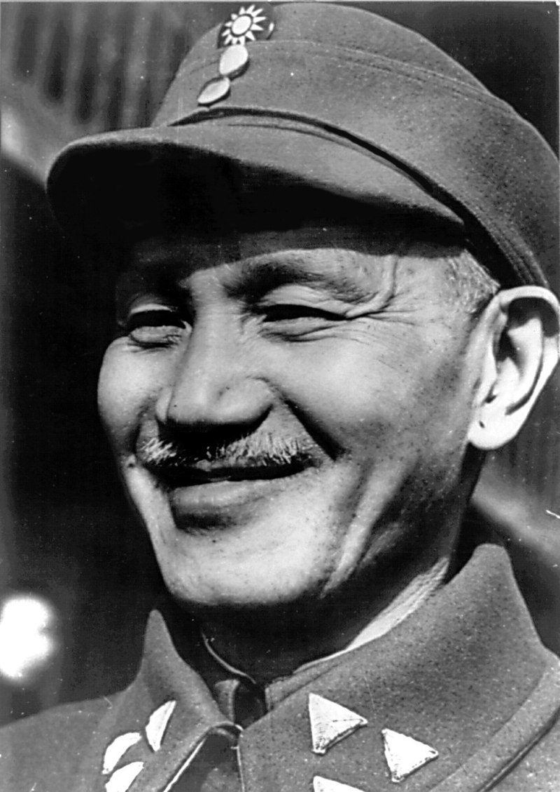
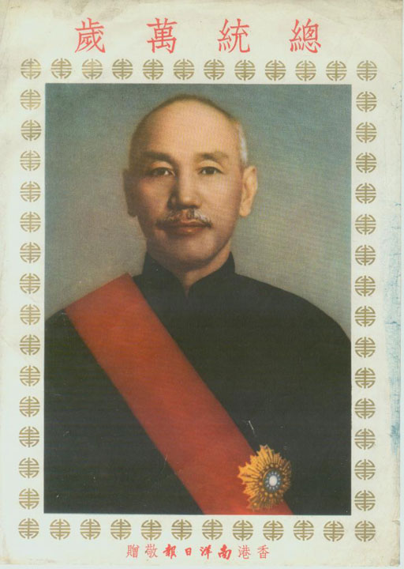

Politician, revolutionary, and military leader
"Controversial Leader, Lasting Legacy"
Leader of the Kuomintang.
Early Life & Military Career
- Early Life
- October 31, 1887, in Xikou, Zhejiang Province, China.
- Family: Came from a merchant and farming family with a degree of local influence. His father died when he was young.
- Early Influences: Traditional Confucian education and growing resentment towards the ruling Qing Dynasty.
- Turning Point: After a period of youthful rebellion, Chiang Kai-shek decided to pursue a military career. Military Career
- Initial Training: In 1906, he enrolled at the Baoding Military Academy in northern China.
- Japan: Continued his military studies in Japan from 1907-1911, where he was exposed to revolutionary ideas, and joined early groups aiming to overthrow the Qing Dynasty.
- Sun Yat-sen: Upon returning to China, Chiang Kai-shek became involved with revolutionary leader Sun Yat-sen and his political party, the Kuomintang (KMT, or the Chinese Nationalist Party).
- Rising Through the Ranks: Demonstrated military prowess and organizational skills during uprisings and struggles against local warlords. Gained Sun Yat-sen's trust, steadily rising in influence within the KMT.
- Whampoa Military Academy: In 1924, Sun Yat-sen appointed Chiang Kai-shek as commandant of the newly established Whampoa Military Academy, which helped build a loyal powerbase within the military.
Leadership of the Kuomintang
- Leadership Policies
- National Unification: Chiang's primary goal was to unify China under the Kuomintang (KMT) rule. He believed a strong central government was necessary for modernization and national security.
- One-Party Rule: Chiang aimed to establish the KMT as the sole legitimate party, suppressing dissent and opposing ideologies like communism.
- Economic Reforms: He attempted to modernize China's economy through infrastructure projects and land reform efforts (though the success of these reforms is debated).
- Military Focus: Chiang prioritized military strength, believing a strong army was crucial for national defense and defeating the Chinese Communist Party (CCP).
- Social Reforms: While limited, Chiang's government implemented some social reforms like promoting women's rights and education. However, these efforts were often overshadowed by his authoritarian tendencies. Chinese Civil War (1927-1949)
- Early Success: Following Sun Yat-sen's death, Chiang led the KMT's Northern Expedition (1926-1928), a military campaign that nominally unified much of China under KMT control.
- KMT-CCP Split: A power struggle erupted between the KMT and the CCP within the united front against the warlords. In 1927, Chiang launched a brutal purge of communists, marking the official start of the Civil War.
- Long and Brutal Conflict: The Civil War was a protracted and bloody struggle. The KMT initially had more resources, but the CCP, led by Mao Zedong, gained popular support, particularly among the peasantry.
- Japanese Invasion (1937): The war was temporarily halted by the Second Sino-Japanese War (1937-1945) where both the KMT and CCP fought against Japan. However, the conflict continued after Japan's defeat.
- KMT Retreat to Taiwan (1949): The CCP gained momentum after WWII due to various factors, including KMT corruption and failing land reforms. By 1949, the CCP achieved a decisive victory, forcing Chiang and the remnants of the KMT government to flee to Taiwan. Relocation to Taiwan
- Establishing a Government in Exile: Chiang Kai-shek relocated his government and about two million KMT supporters to the island of Taiwan. He maintained the claim that the KMT was the legitimate government of all China.
- Martial Law: Chiang imposed martial law in Taiwan, suppressing dissent and consolidating his power. This period, known as the "White Terror," saw human rights abuses and political repression.
- Economic Development: Despite the authoritarian rule, Taiwan's economy underwent significant growth under Chiang's leadership. Land reforms were implemented more effectively here, and U.S. aid further fueled economic development.
- Legacy of the "Two Chinas": Chiang's relocation to Taiwan created a complex situation where mainland China, under the CCP, and Taiwan, governed by the KMT, existed as separate entities. This continues to be a major point of tension in the region.
Controversies & Legacy
Chiang Kai-shek remains a deeply controversial figure in Chinese history.
His policies of authoritarianism and the suppression of dissent led to human rights abuses, including the imprisonment and execution of political opponents.
Critics highlight his disastrous military decisions during the Chinese Civil War, which contributed to the CCP victory.
Furthermore, the period of martial law in Taiwan under his rule is associated with significant political repression.
Despite implementing some social reforms and guiding Taiwan's economic development in its early phases, Chiang's legacy is marred by the limitations on basic freedoms under his reign.
""I don't care whether my subordinates are talented or not; all I want is that they obey my orders.”" - Chiang Kai-shek: China's Generalissimo and the Nation He Lost.
Learn more about Chiang Kai-shek on this external resource: Wikipedia Page